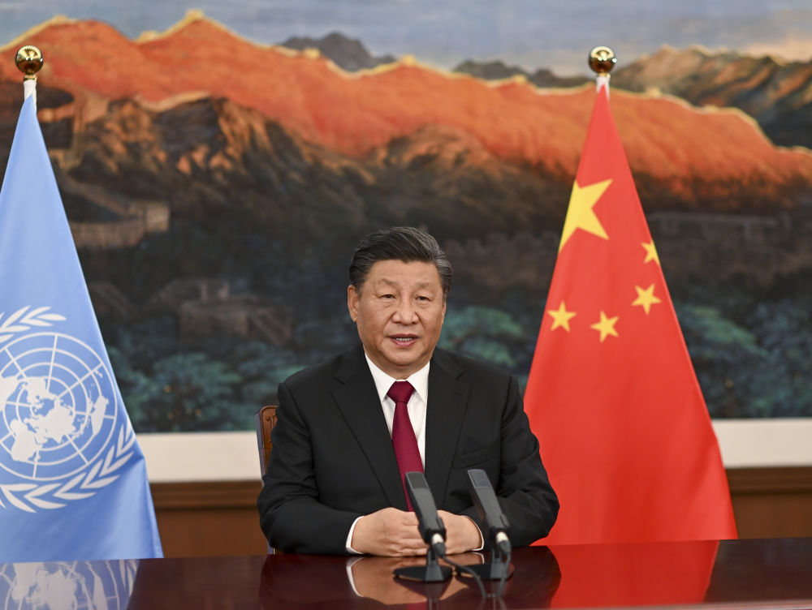

2020年9月，在联合国成立75周年之际，联合国举办生物多样性峰会。习近平主席通过视频发表重要讲话指出：“我们要同心协力，抓紧行动，在发展中保护，在保护中发展，共建万物和谐的美丽家园。” 中国作为主席国，分两个阶段成功召开《生物多样性公约》第十五次缔约方大会（COP15）——  2021年10月，COP15第一阶段会议在中国昆明成功举行。习近平主席以视频方式出席领导人峰会并发表主旨讲话，呼吁共同构建地球生命共同体，并宣布了一批务实的东道国举措。 2022年12月，COP15第二阶段会议在加拿大蒙特利尔召开。高级别会议开幕式上，习近平主席以视频方式致辞，提出“四点主张”——“凝聚生物多样性保护全球共识”“推进生物多样性保护全球进程”“通过生物多样性保护推动绿色发展”“维护公平合理的生物多样性保护全球秩序”，再次表明了中国推动全球生物多样性治理迈上新台阶的坚定决心。